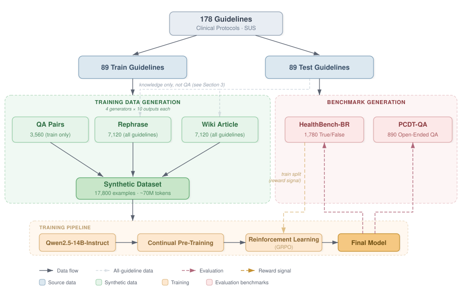
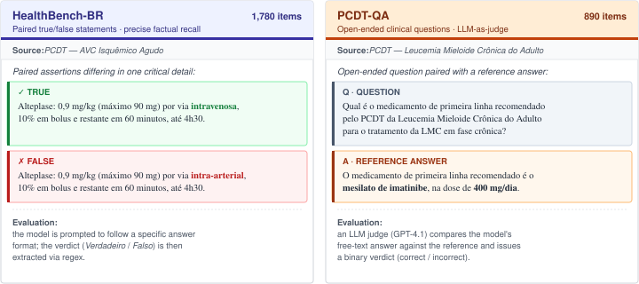

01O problema
O SUS atende mais de 200 milhões de pessoas guiado por protocolos clínicos oficiais publicados pelo Ministério da Saúde — Protocolos Clínicos e Diretrizes Terapêuticas (PCDTs), Protocolos de Uso, Diretrizes Diagnósticas e Terapêuticas em Oncologia, Diretrizes Brasileiras e Linhas de Cuidado. Eles definem critérios diagnósticos, doses, esquemas terapêuticos e parâmetros de monitoramento, e seguir esses protocolos é obrigatório para gestores do SUS.
Mas LLMs atuais — mesmo os modelos de fronteira — são treinados majoritariamente em literatura médica em inglês. Não havia, antes deste trabalho, nenhum benchmark que medisse a acurácia factual ancorada em protocolos brasileiros, e nenhum modelo aberto havia sido especificamente adaptado aos PCDTs oficiais do SUS.
02Pipeline
A partir dos 178 protocolos clínicos (~5,4M tokens), geramos 17.800 documentos sintéticos (~70M tokens) em três formatos complementares — paráfrase, artigo estilo Wikipedia e perguntas-e-respostas — usando quatro geradores diferentes (GPT-4.1-mini, GPT-5-nano, GPT-OSS-20B, Qwen3-235B). Esse corpus é usado pra continual pre-training do Qwen2.5-14B-Instruct, seguido de GRPO usando o split de treino do HealthBench-BR como sinal de recompensa.

03Os benchmarks
Como uma das contribuições centrais do trabalho, lançamos dois benchmarks abertos derivados diretamente dos protocolos oficiais — feitos pra medir, de forma reprodutível, o quanto um modelo absorve do conhecimento clínico brasileiro:
HealthBench-BR
1.780 itens · pareados V/F
Afirmações verdadeiro/falso pareadas. Para cada fato, geramos uma versão verdadeira e uma versão falsa modificando um detalhe crítico (dose, via, intervalo). Acerto exige recordação factual precisa.
PCDT-QA
890 itens · LLM-as-judge
Perguntas abertas com resposta de referência, julgadas por GPT-4.1 numa decisão binária correto/incorreto. Cobrem desde tópicos amplos até consultas factuais específicas.

Exemplos
↔ Clique nas abas pra alternar entre os dois datasets:
04Resultados principais
O modelo final supera todos os baselines proprietários — incluindo Gemini 3.1 Pro, o mais forte deles — em ambos benchmarks. Mesmo o Google AI Overview (busca + LLM, com vantagem inerente: abstém-se de responder em 11,7% das perguntas do HB-BR e 4,9% do PCDT-QA) fica atrás:
| Modelo | HealthBench-BR | PCDT-QA |
|---|---|---|
| Qwen2.5-14B (baseline) | 59,4 | 27,9 |
| + CPT | 69,6 | 66,3 |
| + CPT (4 geradores) | 71,1 | 86,3 |
| + CPT (4 geradores) + GRPO | 83,9 | 85,4 |
| GPT-4.1 | 73,3 | 70,3 |
| GPT-5.2 (high) | 78,5 | 78,2 |
| Claude Sonnet 4.6 | 77,6 | 70,3 |
| Gemini 3.1 Pro | 79,3 | 80,0 |
| Google AI Overview | 70,5 | 77,3 |
05Diversidade de geradores importa mais que escala
O ganho mais expressivo veio da combinação de quatro modelos geradores diferentes ao invés de um só. Com um gerador (GPT-4.1-mini), CPT atinge 66,3% no PCDT-QA. Com quatro, salta pra 86,3% — +20 pontos.
Notavelmente, tamanho do gerador isolado não traduz em ganho: o Qwen3-235B (235B parâmetros) sozinho não domina nenhum benchmark, e auto-aumentar com o próprio Qwen2.5-14B-Instruct é o caso mais fraco (60,2% HB / 50,1% PCDT) — porque seus outputs são curtos demais (~1.594 tokens em média contra 3.471-4.551 dos demais), omitindo doses e detalhes de monitoramento. Diversidade de fraseado e estilo importa mais que volume bruto de tokens.
06RL corrige a bajulação introduzida pelo CPT
HealthBench-BR é perfeitamente balanceado (50% verdadeiro / 50% falso). O Qwen2.5-14B base é bem calibrado (49,9% de "Verdadeiro"), mas o CPT introduz viés pra concordar (58,9%) — provavelmente porque o corpus tende a frasear afirmativamente. O GRPO corrige: nosso melhor modelo volta pra 53,0%, e o ganho de acurácia em HB é +12,8 pontos sobre CPT puro.
Entre modelos de fronteira, Claude Sonnet 4.6 (49,2%) e GPT-5.2-high (48,7%) são bem calibrados; Gemini 3.1 Pro tem viés moderado (63,3%). O Google AI Overview é o sistema mais bajulador avaliado: prediz "Verdadeiro" em 69,6% das vezes — preocupante dado que ele é hoje a fonte default de informação clínica gerada por IA no Google Search.
07RAG empurra ainda mais o desempenho
Combinar nosso melhor modelo com retrieval (top-10 chunks dos protocolos) chega a 95,3% no HB-BR e 93,3% no PCDT-QA. Detalhe interessante: o tipo de retrieval interage com o formato da tarefa — BM25 ganha no HB (verificação lexical de doses/intervalos), embeddings ganham no PCDT (recuperação semântica). E há uma observação contraintuitiva: CPT puro + RAG piora o HB-BR (73,9% vs 90,0% da baseline + RAG), porque o modelo treinado tende a confiar nos próprios parâmetros e ignorar a evidência. O GRPO reverte isso completamente — a recompensa de verdadeiro/falso ensina o modelo a ancorar a resposta no contexto.
08Esquecimento catastrófico
Treinar em domínio clínico pode degradar capacidades gerais. Avaliamos em 5 benchmarks fora-de-distribuição (HealthQA-BR, DrBode, MedPT, BLUEX, IFEval) comparando Full FT, LoRA e Replay (mistura 1:1 com FineWeb). Achados: Full FT fica no lado favorável da fronteira conhecimento↔retenção; LoRA, contraintuitivamente, perde em ambos eixos — consistente com o efeito de intruder dimensions reportado por Shuttleworth et al.
| Dados | Método | HB | PCDT | HealthQA | DrBode | MedPT | BLUEX | IFEval | Avg |
|---|---|---|---|---|---|---|---|---|---|
| — | Baseline | 59,4 | 27,9 | 67,8 | 65,3 | 56,4 | 75,0 | 79,7 | 68,8 |
| 1 gen | Full FT | 69,6 | 66,3 | 66,0 | 62,7 | 56,4 | 73,5 | 75,8 | 66,9 |
| LoRA | 67,2 | 65,2 | 64,1 | 56,6 | 53,8 | 71,1 | 68,6 | 62,8 | |
| Replay | 63,8 | 65,6 | 67,0 | 64,5 | 55,9 | 72,7 | 77,1 | 67,4 | |
| 4 gen | Full FT | 71,1 | 86,3 | 63,3 | 61,2 | 54,1 | 72,8 | 69,3 | 64,1 |
| LoRA | 70,3 | 77,1 | 60,8 | 58,3 | 52,1 | 68,9 | 65,6 | 61,1 | |
| Replay | 69,2 | 80,0 | 65,7 | 59,2 | 54,0 | 73,2 | 69,3 | 64,3 |
09Considerações éticas
O modelo é desenvolvido pra apoiar, não substituir, decisões clínicas. Mesmo a 83,9% de acurácia, erros residuais podem envolver detalhes consequentes (doses, contraindicações). É um modelo de pesquisa, não dispositivo médico certificado, e deve ser usado apenas sob supervisão profissional.
Como todos os dados de treino vêm de documentos públicos do Ministério da Saúde, riscos de privacidade derivados de prontuários são evitados — mas vieses dos documentos-fonte e dos modelos geradores podem persistir. Nossos resultados sobre bajulação reforçam que sistemas de IA clínica precisam ser avaliados não só por acurácia, mas também pela tendência de confirmar afirmações falsas dos usuários. Liberar pesos abertos treinados em protocolos brasileiros é um passo em direção a acesso equitativo pra clínicos e pacientes lusófonos historicamente subatendidos por LLMs centrados em inglês.